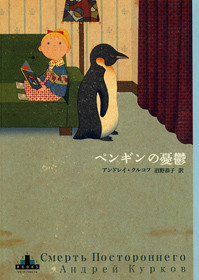

2026年3月1日購入、3月9日読了。2月上旬にOBOG訪問を受けた際、なぜだか斎藤幸平の『人新世の「資本論」』の話になり、就活生でも金儲けがあまり好きではない人もいるのだなあと思ったものだが（かく言う自分も、社会人としてしっかりと資本主義の歯車になっているわけだが）、そんな学生がおすすめの一冊として挙げてくれたのが本書だった。読んだことはなかったがタイトルには聞き覚えがあった。というのも、『激動の時代』でも触れた、「世界文学」の講義の講師の一人であった沼野先生が翻訳していたからだ。沼野先生はお人柄もよく、言葉選びが素敵だったのでよく覚えている。また、あまり関係はないけれども、自分が受験した年のセンター試験では、沼野先生の配偶者である沼野充義氏の「翻訳をめぐる七つの非実践的な断章」が国語の問題に出て、文章がおもしろくてするすると解けたのでなんだか勝手に運命のようなものを感じてしまっている。ちなみに、沼野先生の翻訳した本ではリュミドラ・ウリツカヤ『ソーネチカ』も読んでいるので今度感想を書きたい。もう読んだのも6年前になる。
この本をお勧めしてくれた学生曰く「雨が降っている日に家で読みたくなる本」とのことだったが、物語全体を通してどこか薄暗く寂しい雰囲気が、雨の日に向いているというのはすごくよく分かる。ウクライナを訪れたことはないけれど、ウィーンで過ごした冬や地元日本海側での冬を思い出す。ひょんなことからうつ病のペンギンと暮らしている売れない短編小説家ヴィクトルが主人公の物語で、読み進めれば読み進めるほど不穏さと不条理にまみれた世界に浸かることになる。
ちょっと面白かったのは、この本では要所に三種類の車が出てくること。一つ目は「シルバーのリンカーン」。米国の自動車メーカーであるフォードが製造する高級車。二つ目は、「ザポロージェツ」。1923年にウクライナのザポリージャに設立したトラクターの製造会社で、1960年頃から小型自動車生産を行うようになったソビエト・ウクライナの自動車メーカーZAZが製造するAセグの自動車。三つ目は、「モスクヴィチ・コンビ」。2002年に倒産したソ連自動車メーカーのモスクヴィチが製造する車。あまり自動車には詳しくないが、それぞれ、米国、ウクライナ、ロシアメーカーの車が別々の意味で出てくるのがなんとも面白い。もしこの本を読む機会があれば、どの車がどこに出てくるのかぜひぜひ見てほしいと思う。ちなみに、「モスクヴィチ・コンビ」は主人公ヴィクトルから「「カッコいい」男なら絶対に乗りたがらない車」と評されている。
いつの時代の物語だろう、と読み進めていると、イタリアがウクライナ人にビザなしで入国を許可した、という描写が出てくる。調べてみると2014年頃のことらしいが、この本は1996年に出版されているので違いそう。「訳者あとがき」を読んで、1991年の独立直後を描いているのかなと勝手に想像した。沼野先生のあとがきはやっぱり素晴らしくて、物語を自分の好きなように想像する余地は残しつつ、なるほどと腑に落ちたところがいくつかあった。特に、ソ連から独立した後のウクライナの「宙ぶらりんの環境」というのが自分にはしっくりきて、もう一度読み返したらこの本の違った面が見れそう。
なんだかとっ散らかった感想になってしまったけれど、これにて締めます。すごくいい本でした。